Feed — User Guide
Feed is a small Android app for new parents tracking newborn breastfeeding, pumping, and diapers. It's built around a simple idea: log every session in one place, then look back at the data to spot patterns — feeding frequency, intake, output, weight-gain rhythm.
Everything stays on your phone. No account, no cloud, no ads.
The home screen
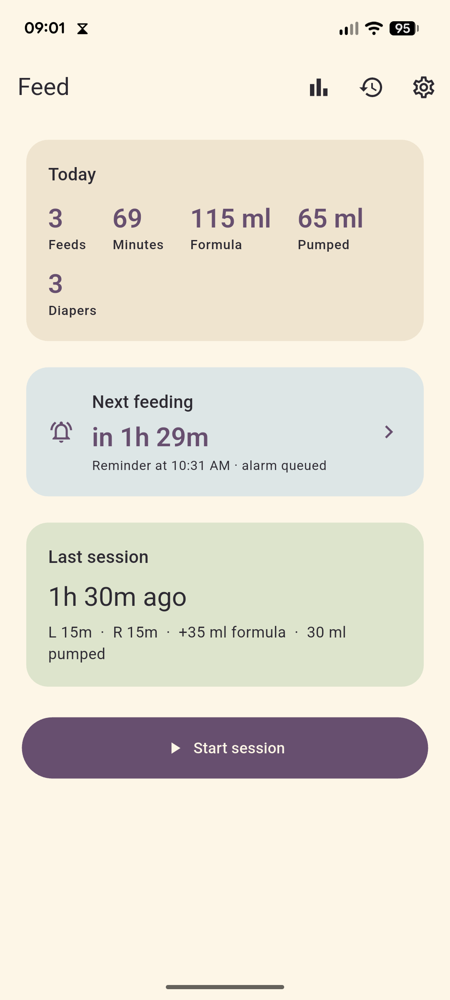
When you open Feed you see three things stacked top-to-bottom:
- Today — a quick tally for the current calendar day: feeds, total feed minutes, formula ml, pumped ml, and diaper count. Resets at local midnight.
- Next feeding — when the next reminder is queued (e.g. "Reminder at 2:30 PM · alarm queued"). Tap it to jump straight to settings.
- Last session — a recap card showing the most recent session, plus any notes.
A big Start session button at the bottom kicks off a new entry. The top-right toolbar has shortcuts to Stats, History, and Settings.
Logging a session
The session flow is a 4-step wizard: diaper → feed → pump → review. Every step is skippable, so you only fill in what's relevant.
Step 1 — Diaper
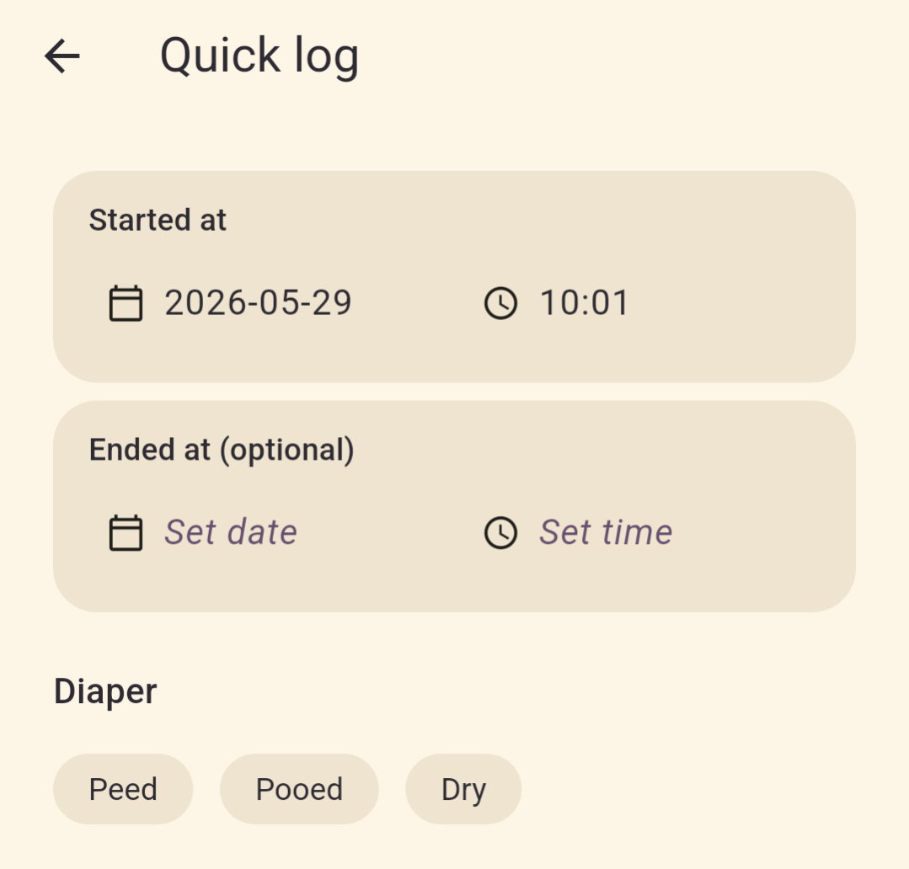
Tap a chip to record the diaper status (wet / dirty / both / none). Skip if you didn't change one this round.
Step 2 — Feed
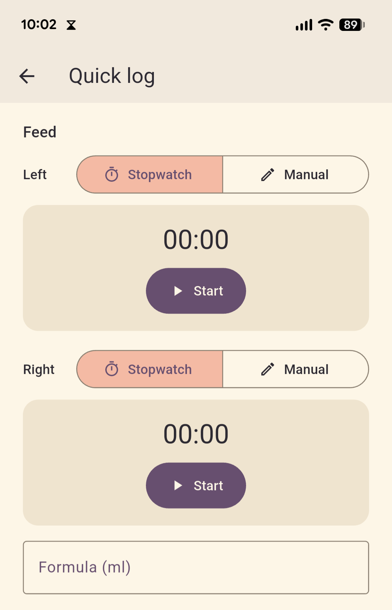
Two options:
- Live stopwatch — tap Left or Right to start timing that side; tap Switch sides to swap. The timer rounds up to whole minutes when you stop, so a 90-second feed counts as 2 minutes (nothing gets undercounted).
- Manual entry — type the minutes per side directly. Use this when you forgot to start the timer or are backfilling a feed that already ended.
You can also enter formula top-up in ml here — useful if you supplement after the breast.
Step 3 — Pump
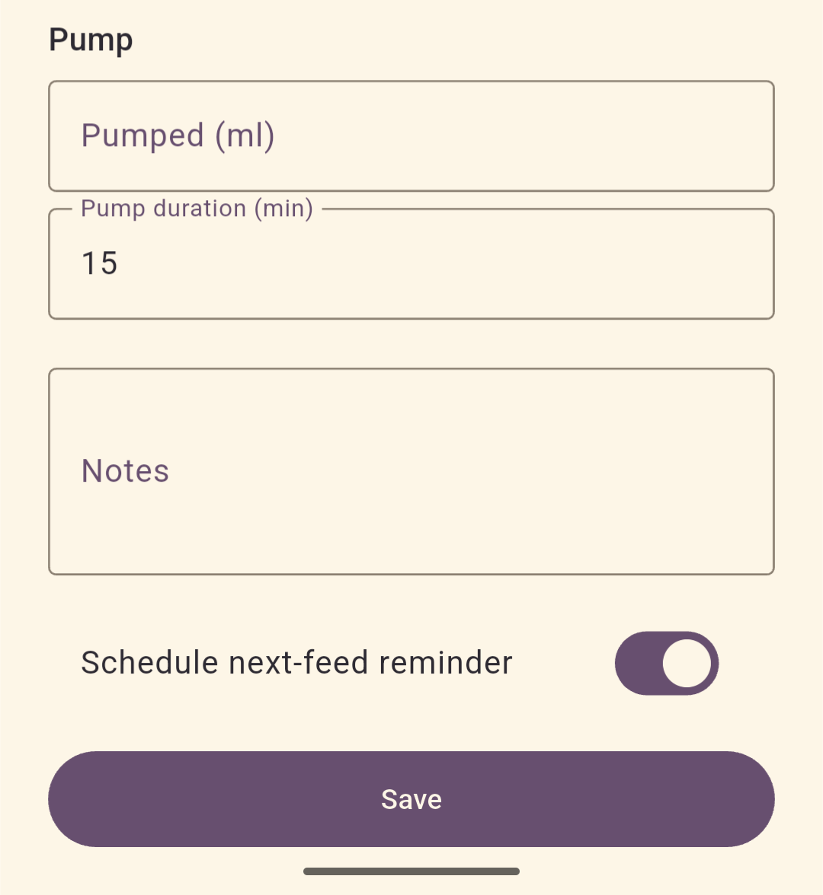
Enter the pumped ml for this session. Skip if you didn't pump.
Step 4 — Review
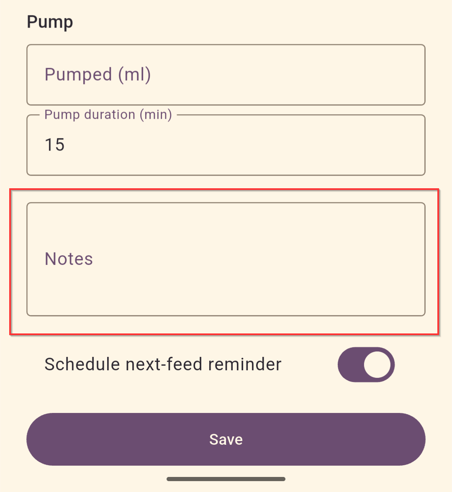
Confirm what you entered, add notes (free text — anything from "fussy latch" to "spit up after"), and choose whether this specific session should arm a reminder for the next feed. The per-session toggle wins over the global default for this entry only.
Hit Save and you're done. The home card immediately shows when the next reminder will fire.
Reminders
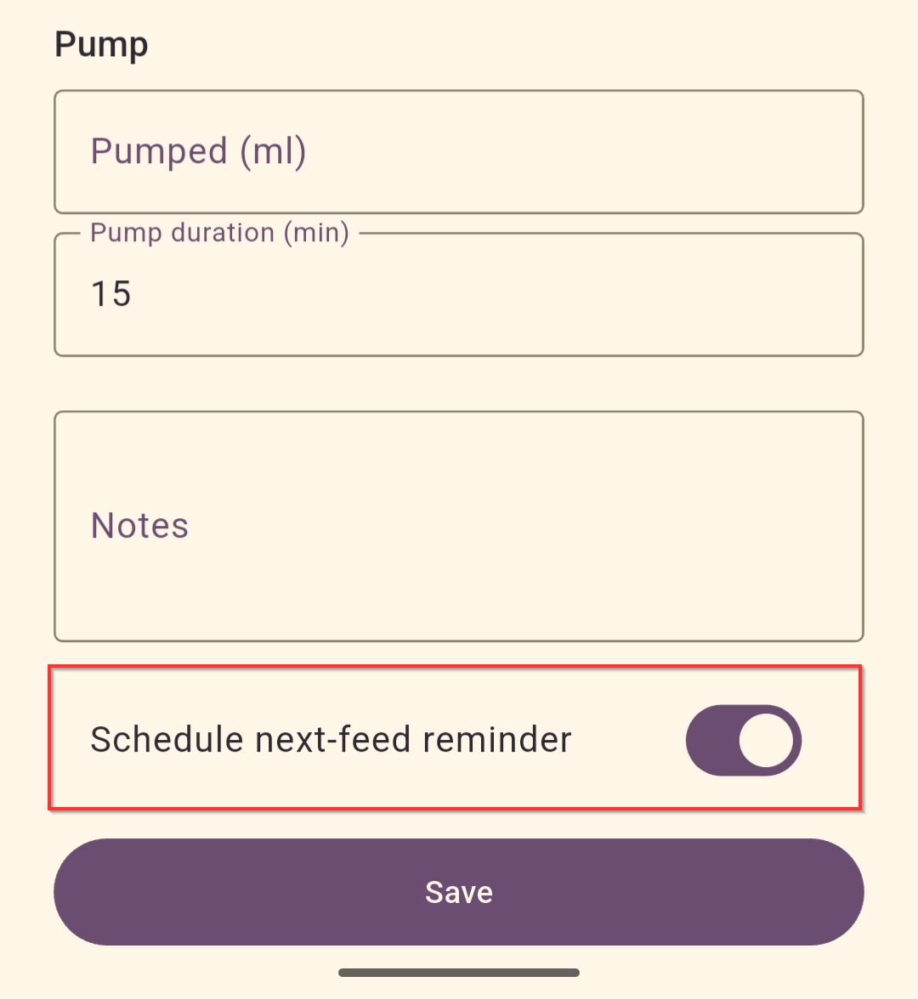
The point of a reminder is "wake me when it's time for the next feed." Feed gives you two modes:
- Alarm clock (default) — schedules a real alarm through your phone's Clock app, so it rings even if Feed isn't running and even if your phone is on Do Not Disturb. This is the mode that actually wakes you at 3 AM.
- No reminder — turn the global toggle off if you'd rather track manually.
In Settings you can change:
- Interval — how long after each feed the reminder should fire (default 3h; chips for 2h / 2.5h / 3h / 3.5h / 4h, or a custom value).
- Anchor — whether the timer starts from when the feed began or ended.
- Snooze — how long the snooze button on the alarm adds.
- Mode — alarm clock vs. no reminder.
Reminders auto-arm after every saved session unless you flipped the per-session switch off or disabled the global toggle.
History
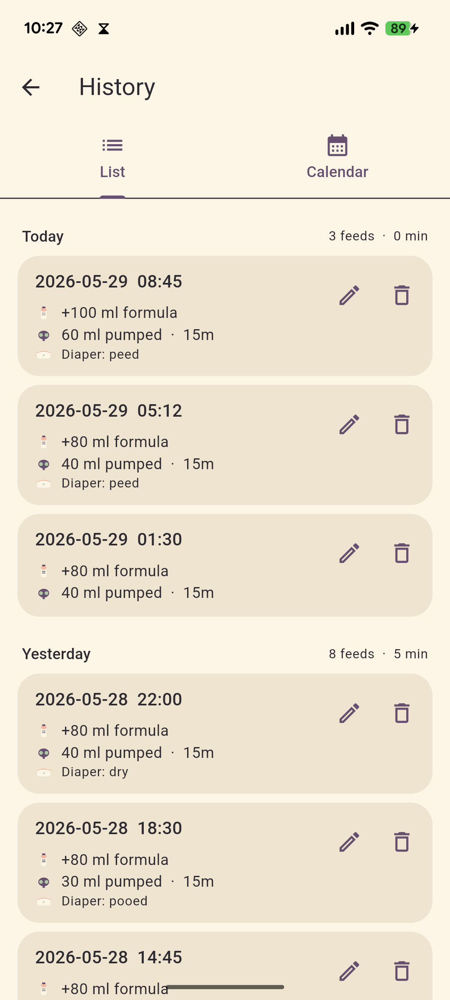
The History screen is a reactive list of every session ever logged, newest first. Each row shows time, side(s), minutes, formula, pumped, diaper.
- Swipe left on a row to delete it. A SnackBar appears with Undo for a few seconds in case it was a misfire.
- Tap a row to view its full notes.
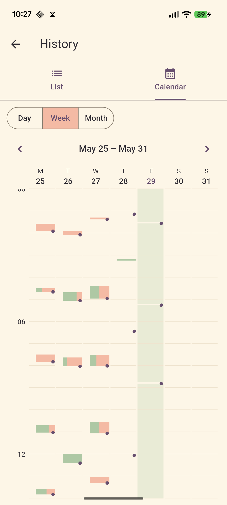
You can also view history by week or month.
Stats
Stats has three tabs over a configurable window (3 days / 7 days / 30 days):
Timeline
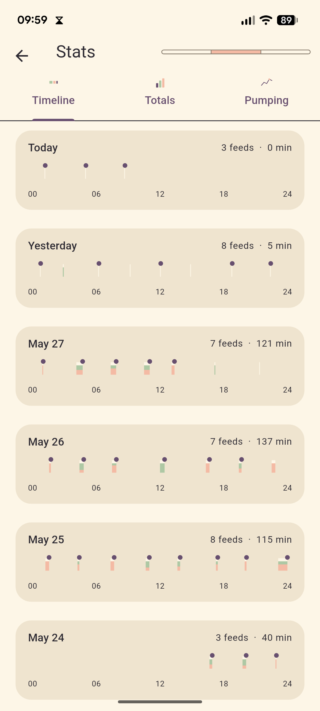
A 24-hour strip per day. Each session is a colored block — left, right, or both — placed at the time it happened, with formula shown as an overlay. Useful for seeing the actual rhythm: are feeds clustering at night? Are gaps shrinking?
Totals
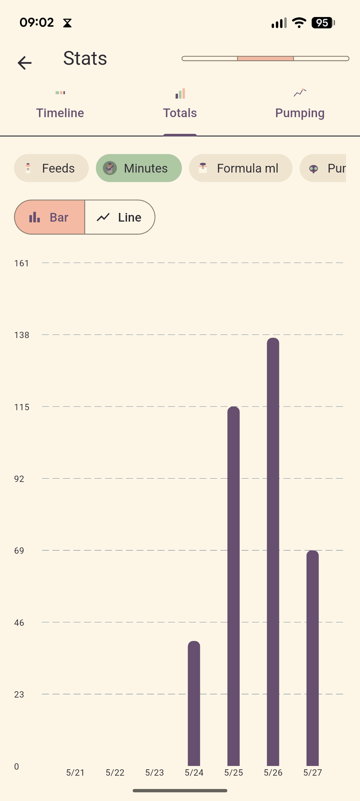
Daily multi-metric bar chart: feed count, feed minutes, formula ml, pumped ml, diaper count. Good for week-over-week comparison.
Pumping
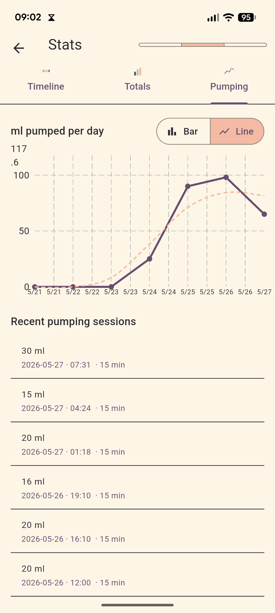
Line chart of daily pumped volume with a dashed 3-day rolling average so day-to-day noise doesn't hide the trend. This is the chart to watch when you're trying to grow supply.
Settings
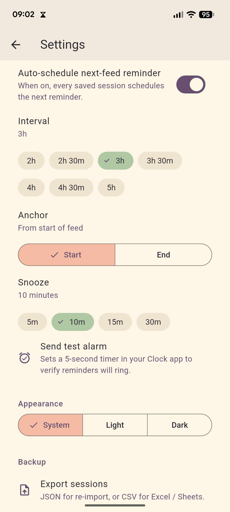
One screen, grouped by section:
- Reminder — interval, anchor, snooze, mode, global on/off.
- Theme — system / light / dark.
- Backup — see below.
Backup
Feed is local-only — your data lives in a SQLite database on your phone. To move between devices or just to be safe:
- Export — produces a single JSON file and opens the system share sheet. Save it to Drive, email it to yourself, AirDrop it, whatever.
- Import — pick a previously exported JSON file and choose Merge (add to existing data) or Replace (wipe and overwrite).
Export regularly — especially before a phone change.
Tips from real-world use
- Backfill liberally. If you forgot to log, open Start session anyway and just type the minutes manually. Even rough numbers are useful at the trend level.
- Use the notes field. Future-you (and any pediatrician you show this to) cares about patterns like "always fussy on the right" or "spit up when over 30 ml formula."
- Trust the alarm-clock mode. It uses your phone's Clock app, so it rings through DND. If you want to be sure, set a 1-minute test reminder once and you'll never doubt it.
- Check the timeline tab weekly. The day-by-day strip makes it obvious whether nights are stretching out or staying compressed.
Troubleshooting
- Reminder didn't fire. Open settings — does it say "alarm queued"? If not, the global toggle may be off, or the per-session switch was flipped off on the last save. Android can also revoke the exact-alarm permission on some OEM ROMs; re-grant it in system settings.
- Stats look empty. The window defaults to 7 days. If you've only been using the app for a day, switch to 3-day view.
- Lost data after reinstall. v1 has no cloud sync — always export before uninstalling.